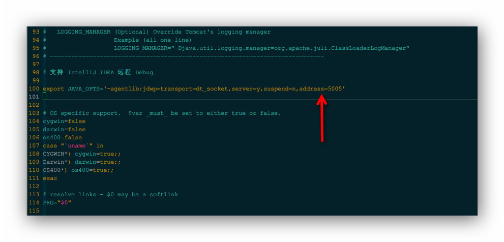

35 IntelliJ IDEA 远程调试 Tomcat
准备工作
- 明确远程服务器的 IP 地址，比如我是：192.168.92.128
- 关掉服务器防火墙：
service iptables stop
本地 Remote Server 配置
- 添加 Remote Server，如下图
图片 35.1 本地 Tomcat 配置
- 复制 Remote Server 自动生成的 JVM 参数，等下有用，如下图，比如我的是：
-agentlib:jdwp=transport=dt_socket,server=y,suspend=n,address=5005 - 如下图，在 Host 添加服务器的 IP 地址：192.168.92.128。
图片 35.2 本地 Tomcat 配置
- 把刚刚复制参数加个前缀，变成：
- Linux（有单引号）：
export JAVA_OPTS='-agentlib:jdwp=transport=dt_socket,server=y,suspend=n,address=5005' - Windows（没有单引号）：
set JAVA_OPTS=-agentlib:jdwp=transport=dt_socket,server=y,suspend=n,address=5005
- Linux（有单引号）：
服务器 Tomcat 配置
- 以 Linux 环境为例
- Tomcat 安装在 /usr/program/tomcat7
- Tomcat 的执行程序：/usr/program/tomcat7/bin/catalina.sh
- 编辑 Tomcat 执行程序：
vim /usr/program/tomcat7/bin/catalina.sh（Windows 是编辑：catalina.bat）- 在该文件的最上面，添加我们刚刚复制的那句话：
export JAVA_OPTS='-agentlib:jdwp=transport=dt_socket,server=y,suspend=n,address=5005'。 - 如果你的项目有特殊 JVM 参数，那你就把你的那部分参数和这部分参数合并在一起。
- 如下图所示：
- 
图片 35.3 远程 Tomcat 配置
- 在该文件的最上面，添加我们刚刚复制的那句话：
开始调试
- 启动服务器 Tomcat
- 启动本地 Remote Server
- 如果可以看到如下图效果，表示已经连接成功了，接下里就是跟往常一样，在本地代码上设置断点，然后你访问远程的地址，触发到该代码自动就会在本地停住。

图片 35.4 开始调试
- 如下图，可以看到调试效果

图片 35.5 开始调试